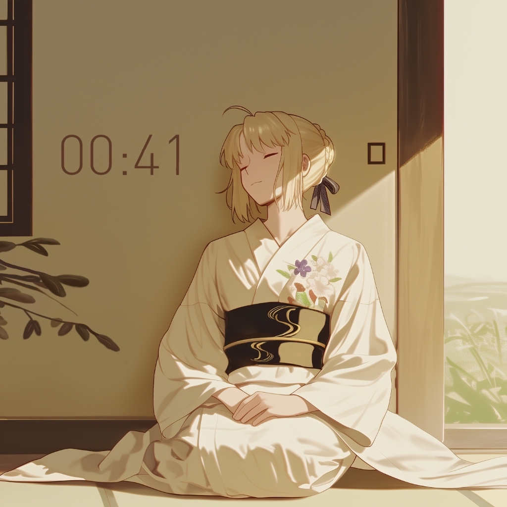

个人简介
01我正在学习计算机科学与技术，关注算法、数据结构、Web 开发、AI 工具链和工程实践。相比堆叠概念，我更喜欢把知识写成可运行的小项目，再通过复盘让能力慢慢沉淀。
- 专业方向计算机科学与技术，重视基础课与实践能力。
- 当前关注前端页面、Python 脚本、算法题解、AI 辅助学习。
- 视觉关键词凌波丽的冷蓝柔光，Saber 的温柔秩序感。
审美偏好
02我喜欢有空气感的动漫画面：人物安静，光线干净，背景留出呼吸空间。凌波丽的蓝色夜光给页面定下安静底色，Saber 的春日与晨光图片补充温度，让页面不只是冷，也有柔和的生活感。

内容分享
03后续这里会作为公开索引，用来整理学习过程中的输出。内容会尽量保持清晰、可复现、可继续补充。
联系方式
04欢迎交流计算机学习、前端页面、项目实践与动漫相关内容。下面的信息可以继续替换成你的真实邮箱、博客或社交账号。